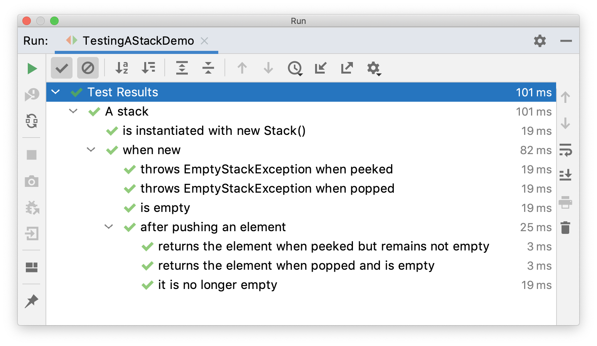

Nested Tests
@Nested tests give the test writer more capabilities to express the relationship among
several groups of tests. Such nested tests make use of Java’s nested classes and
facilitate hierarchical thinking about the test structure. Here’s an elaborate example,
both as source code and as a screenshot of the execution within an IDE.
import static org.junit.jupiter.api.Assertions.assertEquals;
import static org.junit.jupiter.api.Assertions.assertFalse;
import static org.junit.jupiter.api.Assertions.assertThrows;
import static org.junit.jupiter.api.Assertions.assertTrue;
import java.util.EmptyStackException;
import java.util.Stack;
import org.junit.jupiter.api.BeforeEach;
import org.junit.jupiter.api.DisplayName;
import org.junit.jupiter.api.Nested;
import org.junit.jupiter.api.Test;
@DisplayName("A stack")
class TestingAStackDemo {
@Test
@DisplayName("is instantiated with new Stack()")
void isInstantiatedWithNew() {
new Stack<>();
}
@Nested
@DisplayName("when new")
class WhenNew {
Stack<Object> stack;
@BeforeEach
void createNewStack() {
stack = new Stack<>();
}
@Test
@DisplayName("is empty")
void isEmpty() {
assertTrue(stack.isEmpty());
}
@Test
@DisplayName("throws EmptyStackException when popped")
void throwsExceptionWhenPopped() {
assertThrows(EmptyStackException.class, stack::pop);
}
@Test
@DisplayName("throws EmptyStackException when peeked")
void throwsExceptionWhenPeeked() {
assertThrows(EmptyStackException.class, stack::peek);
}
@Nested
@DisplayName("after pushing an element")
class AfterPushing {
String anElement = "an element";
@BeforeEach
void pushAnElement() {
stack.push(anElement);
}
@Test
@DisplayName("it is no longer empty")
void isNotEmpty() {
assertFalse(stack.isEmpty());
}
@Test
@DisplayName("returns the element when popped and is empty")
void returnElementWhenPopped() {
assertEquals(anElement, stack.pop());
assertTrue(stack.isEmpty());
}
@Test
@DisplayName("returns the element when peeked but remains not empty")
void returnElementWhenPeeked() {
assertEquals(anElement, stack.peek());
assertFalse(stack.isEmpty());
}
}
}
}When executing this example in an IDE, the test execution tree in the GUI will look similar to the following image.

In this example, preconditions from outer tests are used in inner tests by defining
hierarchical lifecycle methods for the setup code. For example, createNewStack() is a
@BeforeEach lifecycle method that is used in the test class in which it is defined and
in all levels in the nesting tree below the class in which it is defined.
The fact that setup code from outer tests is run before inner tests are executed gives you the ability to run all tests independently. You can even run inner tests alone without running the outer tests, because the setup code from the outer tests is always executed.
Only non-static nested classes (i.e. inner classes) can serve as @Nested test
classes. Nesting can be arbitrarily deep, and those inner classes are subject to full
lifecycle support, including @BeforeAll and @AfterAll methods on each level.
|
Interoperability
@Nested may be combined with
@ParameterizedClass in which case the nested test
class is parameterized.
The following example illustrates how to combine @Nested with @ParameterizedClass and
@ParameterizedTest.
@Execution(SAME_THREAD)
@ParameterizedClass
@ValueSource(strings = { "apple", "banana" })
class FruitTests {
@Parameter
String fruit;
@Nested
@ParameterizedClass
@ValueSource(ints = { 23, 42 })
class QuantityTests {
@Parameter
int quantity;
@ParameterizedTest
@ValueSource(strings = { "PT1H", "PT2H" })
void test(Duration duration) {
assertFruit(fruit);
assertQuantity(quantity);
assertFalse(duration.isNegative());
}
}
}Executing the above test class yields the following output:
FruitTests ✔
├─ [1] fruit = "apple" ✔
│ └─ QuantityTests ✔
│ ├─ [1] quantity = 23 ✔
│ │ └─ test(Duration) ✔
│ │ ├─ [1] duration = "PT1H" ✔
│ │ └─ [2] duration = "PT2H" ✔
│ └─ [2] quantity = 42 ✔
│ └─ test(Duration) ✔
│ ├─ [1] duration = "PT1H" ✔
│ └─ [2] duration = "PT2H" ✔
└─ [2] fruit = "banana" ✔
└─ QuantityTests ✔
├─ [1] quantity = 23 ✔
│ └─ test(Duration) ✔
│ ├─ [1] duration = "PT1H" ✔
│ └─ [2] duration = "PT2H" ✔
└─ [2] quantity = 42 ✔
└─ test(Duration) ✔
├─ [1] duration = "PT1H" ✔
└─ [2] duration = "PT2H" ✔